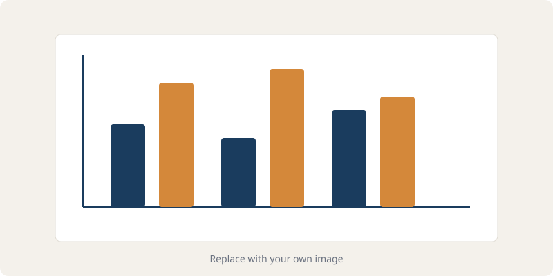

A deeper look at what excites me in the world of data and beyond.

Data visualization is the area of data science that excites me the most. I believe that a well-designed chart or interactive dashboard can communicate complex findings more effectively than any written report. During my studies, I have worked with tools like D3.js, Matplotlib, Seaborn, Plotly, and Tableau. Each tool has its own strengths: D3.js gives you complete control over every pixel on the screen, while Tableau makes it easy to rapidly prototype visual analyses without writing code.
One of my favorite projects involved building an interactive map that showed the relationship between public transit accessibility and housing prices across neighborhoods in Boston. I used D3.js to render a GeoJSON map layer and added tooltips so users could hover over each neighborhood to see median rent and the distance to the nearest T station. The project taught me that good design is not about making things pretty — it is about removing barriers between the viewer and the insight. Color choices, label placement, axis scales, and interaction design all contribute to whether a visualization succeeds or fails.
Moving forward, I am especially interested in narrative visualization — the practice of guiding a reader through a data story step by step, similar to scrollytelling articles published by outlets like The Pudding and the New York Times graphics desk. I hope to combine my technical skills with storytelling techniques to create visualizations that inform and engage a broad audience.
When I step away from the keyboard, I enjoy a few hobbies that keep me grounded. Hiking is my favorite way to decompress — the Blue Hills Reservation and Middlesex Fells are my go-to spots within a short drive from campus. I also love experimenting with specialty coffee: adjusting grind size, water temperature, and brew ratios is basically a tiny data experiment every morning.